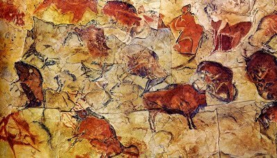
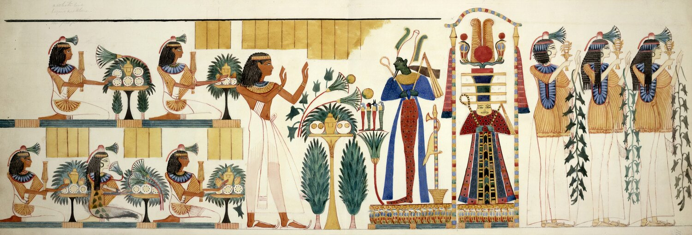
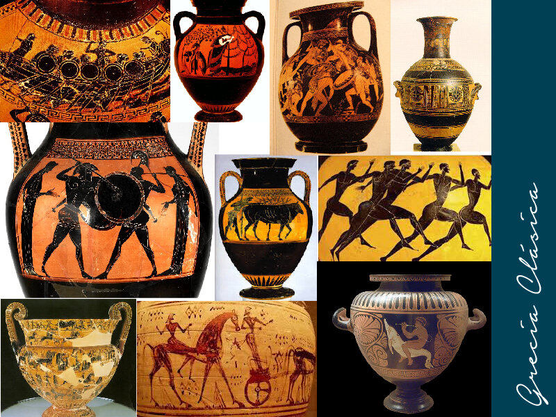
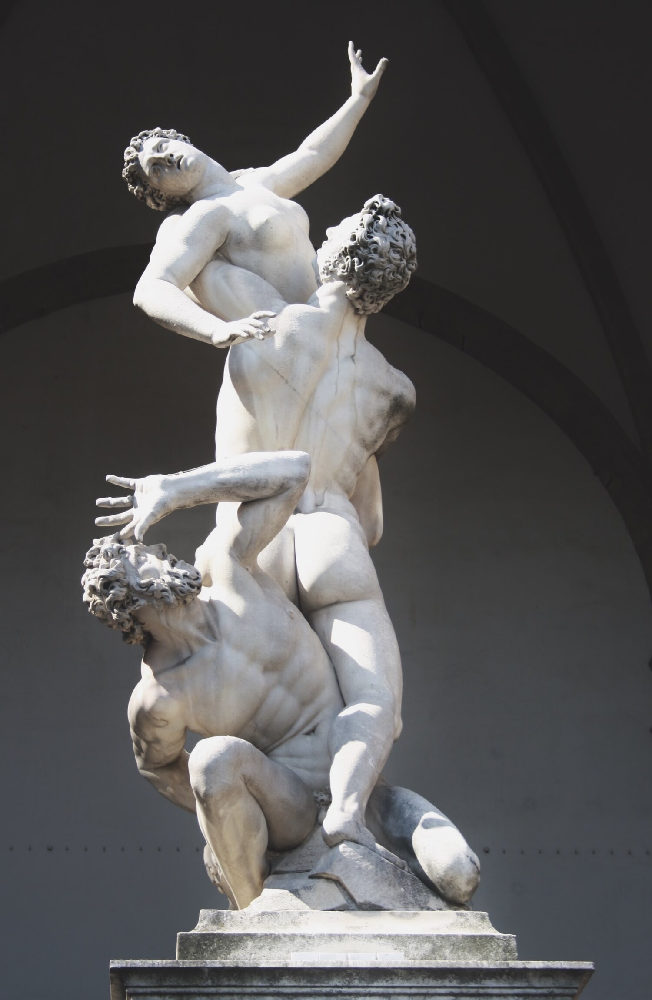

EL ARTE DE LA PREHISTORIA
Las muestras más tempranas de pintura corresponden al paleolítico Superior. Los colores más usados el negro, el rojo,el ocre y el amarillo. Se representan grandes animales como bisontes y, en menor grado, hombres. Aún no aparece la figura femenina.
Es llamada Pintura Rupestre donde el estilo es natural, las figuras se distribuyen libremente por el espacio y no mantienen las mismas proporciones. Los animales siempre están de perfil. No se sabe exactamente el significado de estas pinturas prehistóricas, sin embargo, se creen que están relacionadas con ritos religiosos, funerarios y con la caza.
EL ARTE EGIPCIO
El arte egipcio estaba al servicio del poder y la religión y se utilizaba para realzar y distinguir a sus principales representantes. Se podían distinguir a todos sus personajes según las indumentarias, tamaño y lugar escogido para su representación. El lugar donde se los ubicaba, osea los edificios sagrados y religiosos marcaban la diferencia entre ellos y el resto de la sociedad. Los egipcios crearon espacios monumentales: las pirámides y los templos.
En esta época aparecen los Dioses y los símbolos. Los antiguos egipcios creían que el mundo estaba constituido por los dioses, los faraones y los seres humanos. Las imágenes se relacionaban con la muerte: se consideraba que todo lo representado cobraba vida en el Más Allá. Es por esto que se recreaban escenas de la vida cotidiana, como la preparación y el almacenamiento de alimentos o las posesiones del difunto. A todo esto lo complementaban con textos jeroglíficos extraídos del Libro de los muertos.
EL ARTE DE LA MESOPOTAMIA
Las principales características del arte mesopotámico eran el esquematismo, la frontalidad, el hieratismo y la rigidez. Por regla general, el cuerpo humano se representa desnudo de cintura para arriba y con faldas. Los ojos son grandes y con mirada fija. Los personajes están de pie o sentados y con las manos cruzadas en actitud de oración.
En la arquitectura tenemos muchos monumentos principales: templos, tumbas, murallas y palacios. Dentro de la escultura, se desarrollaron tanto las estatuas como el bajorrelieve. Y dentro de la pintura y relieve se puede decir que las obras eran cromáticamente pobres y la temática se basaba en escenas de guerra y de sacrificios rituales con mucho realismo. Los habitantes de Mesopotamia dominaban el trabajo de los metales y eran grandes orfebres.

ARTE GRIEGO
Los artistas griegos desarrollaron la técnica de figuras rojas, que consiste en dejar las imágenes del color cobrizo de la cerámica y pintar el fondo negro. Para la religión, las ciencias y las artes griegas el ser humano era el centro del universo. La religión es algo muy importante y cada estado estaba bajo la protección de un dios o una diosa. Ellos tomaban forma humana y se celebraban festividades en su honor.
Los griegos crearon diversos tipos de edificios, de entre los cuales destacan los templos por un lado y construcciones civiles como el teatro. Dichos templos tenían 3 órdenes de columnas: dórico, jónico y corintio.
Algo muy importante en la época del arte griego es que sus autores pasaron de la categoría de simples artesanos a la de artistas. Desde la época clásica los escultores salieron del anonimato y fueron conocidos por su obras, que poseían un estilo propio.
ARTE ROMANO
En este arte existía la idea de transmitir a toda la civilización, una misma idea política, cultura y arte como se hacía en Roma. La glorificación del poder y de su emperador era su objeto principal. Aquí observamos los templos, las basílicas y coliseos. Los escultores emplearon el bronce y el mármol para crear grandes retratos.
Las formas del cuerpo humano que anteriormente eran planas, empezaron a adquirir volúmen. Los pintores de Roma poseían un estilo más cercano a la naturaleza que los anteriores, y sus composiciones a menudo incluían temas paisajistas.
Sus artistas se inspiraron con mucha frecuencia en temas de la mitología. Los primeros artistas cristianos adecuaron la simbología y la iconografía paganas al contenido del Antiguo y el Nuevo Testamento.
